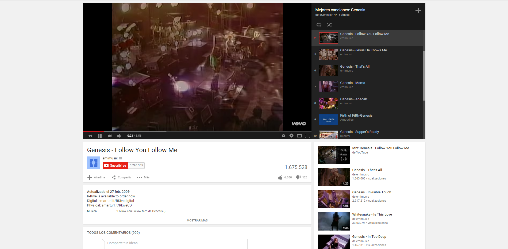

Sistema de Inscripción de Alumnos
Manual de usuario
Instalación
Requerimientos
El Sistema de Inscripción de Alumnos está desarrollado íntegramente en
Django versión 1.7 y codificado en Python 3.
Para correr el sistema localmente se requiere:
Correr el servidor localmente
Utilizando la consola, desde el directorio del SIA, se corre el comando:
./manage.py makemigrations para crear los modelos de la base de datos:
$ ./manage.py makemigrations
Migrations for 'sia':
0001_initial.py:
- Create model Alumno
- Create model Cuota
- Create model Cursado
- Create model Curso
- Create model DescubrimientoCurso
- Create model DescubrimientoOpcion
- Create model Materia
- Create model Pais
- Add field opcion to descubrimientocurso
- Add field materias to curso
- Add field curso to cursado
- Add field cursado to cuota
- Add field pais to alumno
- Add field usuario to alumno
El comando ./manage.py migrate para crear la base de datos:
$ ./manage.py migrate
Operations to perform:
Synchronize unmigrated apps: debug_toolbar, django_extensions
Apply all migrations: admin, auth, contenttypes, sessions, sia
Synchronizing apps without migrations:
Creating tables...
Installing custom SQL...
Installing indexes...
Running migrations:
Applying contenttypes.0001_initial... OK
Applying auth.0001_initial... OK
Applying admin.0001_initial... OK
Applying sessions.0001_initial... OK
Applying sia.0001_initial... OK
El usuario administrador se crea con el comando ./manage.py createsuperuser:
$ ./manage.py createsuperuser
Username (leave blank to use 'hostname’'): sia_admin
Email address: admin@sia.com
(opcional)
Password:
Password (again):
Superuser created successfully.
Finalmente el servidor se levanta con el comando ./manage.py runserver
$ ./manage.py runserver
Performing system checks...
System check identified no issues (0 silenced).
May 10, 2015 - 13:57:31
Django version 1.7.1, using settings 'cefyt.settings'
Starting development server at http://127.0.0.1:8000/
Quit the server with CTRL-BREAK.
Desde un navegador web puede se puede acceder al sistema a través de la dirección:
http://127.0.0.1:8000/.
La dirección y el puerto por defecto, pueden cambiar usando:
$ ./manage.py runserver <ip>:<port>, por ejemplo:
$ ./manage.py runserver 0.0.0.0:8080

Parametrización del sistema
La parametrización del sistema sólo puede hacerlo un
usuario administrador, a través de la página admin,
ingresando su nombre de usuario y contraseña:
Cursados, cursos y materias
Las materias son entidades simples formadas solamente por un nombre único. Una vez creadas
son asignadas a distintos cursos. Por ejemplo, la matería 'Matemática' puede pertenecer tanto
al curso 'Física' como al curso 'Electrónica'.
Un curso está formado por un nombre único, un conjunto de materias y una descripción (opcional).
Por ejemplo, el curso 'Electrónica' está formado por las materias 'Fisica I' y 'Álgebra'.
Un cursado está formado por un curso y además tiene información temporal, económica y
listado de los alumnos que lo tomarán.
Los datos que contienen son:
- Nombre: Identificador único del curso.
- Curso: Curso asociado al cursado.
- Alumnos: Alumnos inscriptos al cursado.
- Duración: Duración en meses del cursado.
- Costo inscripción en pesos: Costo en pesos de la matriculación al curso.
- Costo inscripción en dólares: Costo en dólares de la matriculación al curso.
- Costo certificado en pesos: Costo en pesos del certificado.
- Costo certificado en dólares: Costo en dólares del certificado.
- Valor cuota en pesos:
- Valor cuota en dólares:
- Inscripción abierta: Indica si éste curso tiene la inscripción abierta.
Solamente los cursos con inscripción abierta se mostrarán en la cuenta de un alumno.
Todos los cursados quedan almacenados almacenados en la base de datos.
Paises
¿Cómo conoció el curso?
Registro de alumnos
Para darse de alta, el alumno deberá ingresar los siguientes datos:
- Nombre (Máximo 255 caracteres)
- Apellido (Máximo 255 caracteres)
- Documento (Máximo 255 caracteres, sólo números)
- Domicilio (Máximo 255 caracteres)
- País (Opciones fijas parametrizables)
- Provincia (Máximo 255 caracteres)
- Localidad (Máximo 255 caracteres)
- Teléfono (Máximo 255 caracteres)
- Teléfono alternativo (Máximo 255 caracteres, opcional)
- Fecha de nacimiento (Formato DD/MM/AAAA)
- Correo electrónico (Formato de email)
- Contraseña (Máximo 255 caracteres)